1 · Antibiotics, Antivirals and Antifungals
Adam Wood, Pharm.D., DABAT
Instructional Objectives
- Discuss the basics of antimicrobial management, including the categorizations of drugs known as antiseptics, antimicrobials, anti-infectives, antibacterials (antibiotics), antivirals, and antifungals
- Compare and contrast the common modes of action of antimicrobial agents against microorganisms
- Explain the difference between a bacteriostatic drug and a bactericidal drug.
- Identify common drugs, indications, contraindications, molecular mechanisms of action, routes of administration, dosing protocols, potential interactions, precautions, common adverse effects, any needed laboratory monitoring, and appropriate patient education for the following classes of antibiotics: a. Penicillins b. Cephalosporins c. Monobactams d. Carbapenems e. Macrolides/ketolides f. Lincosamides g. Streptogramins h. Tetracyclines i. Aminoglycosides j. Glycopeptides & lipopeptides k. Fluoroquinolones l. Oxazolidinones m. Polypeptides n. Folate synthesis inhibitors o. Nitroimidazoles
- Identify common drugs, indications, contraindications, mechanisms of action, routes of administration, dosing protocols, potential interactions, precautions, common adverse effects, any needed laboratory monitoring, and appropriate patient education for the following classes of antivirals:
- Anti-herpes agents
- Anti-cytomegalovirus agents
- Anti-influenza agents
- Identify common drugs, indications, contraindications, mechanisms of action, routes of administration, dosing protocols, potential interactions, precautions, common adverse effects, any needed laboratory monitoring, and appropriate patient education for the following classes of antifungals: a. Echinocandins b. Polyenes c. Azoles d. Allylamines e. Mitotic inhibitors
Second: Dr. Wood told the class there is no need to memorize or know drug dosages. The deck is full of regimens and this guide reproduces almost none of them. Where a number does appear it is because it is a monitoring target or a treatment duration you would counsel a patient about, not a dose.
Dr. Wood told the class what his own emphasis marker is. From the Lecture 1 recording: “anytime I say… this is really notable, that’s something you should probably be starring — think about those kinds of things and write test questions.” He used that marker about fifty times. He also gave three standing rules outright:
- QT prolongation — “anytime we see QT prolongation, you should star that, underline it.” Said twice. It spans classes: macrolides, fluoroquinolones and posaconazole.
- Methicillin-resistant Staphylococcus aureus coverage — “anytime you see MRSA coverage, star it, highlight it, underline it.”
- Teratogenic drugs — “anytime we see a teratogenic drug, also note that, because it can be very significant.”
He also gave a test-question pattern outright: pneumonia in a patient from a hotel with a contaminated air-conditioning unit is always Legionella.
1.1 · Objective 1 — Categorizations of antimicrobial drugs
The lecture opens by separating terms that get used interchangeably in conversation and are not interchangeable at all.
| Term | What it means |
|---|---|
| Antimicrobial | The broad category — any agent acting against a microbe |
| Antibacterial (antibiotic) | Acting against bacteria. Strictly, an antibiotic is of microbial origin |
| Antiviral | Acting against viruses |
| Antifungal | Acting against fungi |
| Antiseptic | Applied to living tissue to reduce microbial load |
| Anti-infective | Umbrella term covering agents used to treat infection |
Choosing a regimen is then framed by drug factors: spectrum of activity; pharmacokinetics (absorption, distribution, penetration into body compartments, elimination); pharmacodynamics (bactericidal or bacteriostatic, time-dependent or concentration-dependent killing); and toxicities across six systems — gastrointestinal, integument, hematologic, central nervous system, hepatic and renal. Those six recur as the monitoring parameters for individual classes later, so they are worth reading as a checklist rather than a list.
1.2 · Objective 2 — Common modes of action
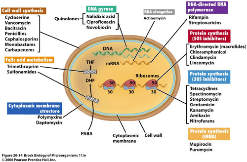
| Target | Classes |
|---|---|
| Cell wall synthesis | Penicillins, cephalosporins, monobactams, carbapenems, vancomycin, bacitracin |
| Protein synthesis — 50S subunit | Macrolides, clindamycin, chloramphenicol, streptogramins |
| Protein synthesis — 30S subunit | Aminoglycosides, tetracyclines |
| DNA gyrase / topoisomerase | Fluoroquinolones |
| Folic acid metabolism | Sulfonamides, trimethoprim |
| Cytoplasmic membrane | Polymyxins, daptomycin |
| Nucleic acid, direct damage | Metronidazole |
Also tested
- Ribosomal subunit targets. 50S: macrolides, clindamycin, chloramphenicol and streptogramins; 30S: aminoglycosides and tetracyclines. The bacterial ribosome is 70S against the mammalian 80S, which is the basis for selectivity.
1.3 · Objective 3 — Bacteriostatic versus bactericidal
Bacteriostatic inhibits a vital pathway used in bacterial growth but does not directly cause death. Bactericidal disrupts function enough that death occurs. The lecture gives five and six agents respectively:
| Bacteriostatic | Bactericidal |
|---|---|
| Erythromycin · tetracyclines · sulfonamides · trimethoprim · clindamycin | Penicillins · cephalosporins · aminoglycosides · vancomycin · fluoroquinolones · metronidazole |
Notice the bactericidal list spans the cell wall, the ribosome and DNA. Killing is not tied to one target, so you cannot infer static-versus-cidal from mechanism alone — it has to be learned.
| Concentration-dependent | Time-dependent | |
|---|---|---|
| What drives killing | Higher concentration, greater killing | Time above the minimal inhibitory concentration |
| Post-antibiotic effect | Present | None |
| Target | Peak level | 40–70% of the dosing interval above the minimal inhibitory concentration |
| Dosing that follows | Large, widely spaced doses | Continuous or frequent infusions |
Also tested
- Penicillinase-resistant penicillin monitoring. Monitor hepatic function, complete blood count, and signs or symptoms of anaphylaxis; dosing depends on hepatic rather than renal function, unlike most other penicillins.
- Penicillinase-resistant penicillins and MRSA. Methicillin-resistant Staphylococcus aureus has increasingly rendered them ineffective, and vancomycin is the treatment of choice; the class was built for Staphylococcus aureus, and methicillin resistance defeats it.
- Ertapenem dosing. It is given as 1 gram intravenously once daily, infused over 30 minutes.
- Cefepime gaps. It does not cover resistant Staphylococcus, Enterococcus or anaerobes, despite its broad Gram-negative and Gram-positive reach.
- Bacteriostatic versus bactericidal. Static drugs halt growth; cidal drugs disrupt enough to kill. The split is about whether the drug itself kills, not about how fast it works.
- Concentration-dependent versus time-dependent killing. With concentration-dependent killing, more drug kills more; time-dependent agents depend on time above the level, which should be 40 to 70 percent of the dosing interval (time above the minimal inhibitory concentration).
- Concentration- versus time-dependent killing. In concentration-dependent killing, higher drug concentration produces greater killing and there is a post-antibiotic effect; in time-dependent killing the extent of killing plateaus and the time above the minimal inhibitory concentration governs the result.
- Time-dependent antibiotics. The drug concentration should exceed the minimum inhibitory concentration for 40 to 70 percent of the dosing interval, and these agents show no post-antibiotic effect.
- Time-dependent agent with no post-antibiotic effect. Use continuous or frequent infusions, keeping the concentration above the minimal inhibitory concentration for 40 to 70 percent of the dosing interval, because organisms resume growing as soon as the level falls.
Why there is more than one beta-lactam
The classes below arrive in the objectives as a list. They are easier to hold as a sequence: each one exists because the one before it failed at something specific, and each addition costs something.
| Agent | What it adds | What still defeats it |
|---|---|---|
| Penicillin G | The original. Gram-positives; drug of choice for syphilis, gas gangrene and meningococcus | Staphylococcal penicillinase, and most gram-negatives |
| Nafcillin, oxacillin, dicloxacillin | A side chain that shields the ring from penicillinase — so, staphylococci | Gram-negatives. Designed solely for methicillin-sensitive S. aureus |
| Ampicillin, amoxicillin | Gram-negative reach, plus Enterococcus and Listeria | Beta-lactamase producers — the shield was traded away for the reach |
| Amoxicillin/clavulanate, ampicillin/sulbactam | An inhibitor bolted on to absorb the enzyme — staphylococci and anaerobes come back. Bites, diabetic foot | Pseudomonas |
| Piperacillin/tazobactam | Pseudomonas, and the breadth for polymicrobial and nosocomial infection | Extended-spectrum beta-lactamases |
| Cephalosporins, 1st → 5th | Gram-positive cover trades gradually for gram-negative as you climb; 4th (cefepime) antipseudomonal and the choice in neutropenic fever; 5th (ceftaroline) is the only one with MRSA cover | Extended-spectrum beta-lactamases; enterococci throughout |
| Carbapenems | Extended-spectrum beta-lactamase producers and multidrug-resistant gram-negatives — the end of the ladder | The cost is seizures, specifically with imipenem |
1.4 · Objective 4 — Beta-lactams
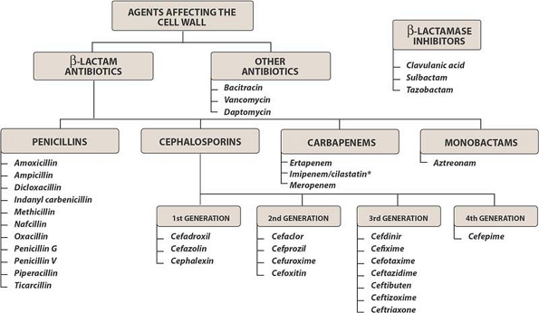
Also tested
- Antipseudomonal penicillin adverse reactions. They are hypersensitivity reaction, rash and diarrhea, with monitoring for anaphylaxis, renal function, complete blood count and bleeding.
- Cephalosporin elimination. Cephalosporins are mostly eliminated renally, and they also penetrate cerebrospinal fluid well.
- Fourth-generation cephalosporins. The fourth generation gains Gram-negative reach without losing Gram-positive reach, which separates cefepime from the third generation.
- Aminopenicillin with warfarin. The interaction is abnormal prolongation of the prothrombin time; anticoagulants head the list of aminopenicillin interactions.
- Penicillin cross-sensitivity with cephalosporins. The rate is less than 1 percent, so a reported penicillin allergy does not automatically exclude a cephalosporin.
- Ceftriaxone in renal impairment. It requires no dosage adjustment in renal insufficiency, in contrast to the cephalosporin class as a whole, which is mostly renally eliminated.
- Carbapenems. They are drug of choice for resistant Gram-negatives, ESBL producers, meningitis; their resistance to hydrolysis by beta-lactamases makes them the answer to extended-spectrum producers.
- Cefazolin and cephalexin. Their activity covers Gram-positives without Enterococcus, with some Gram-negative cover; the absence of Enterococcus coverage recurs across the whole cephalosporin class.
- Carbapenem uses. Carbapenems are the drug of choice for multidrug-resistant Gram-negative infections, extended-spectrum beta-lactamase producing bacteria, nosocomial infections, and meningitis; resistance to hydrolysis by beta-lactamases makes them the answer to extended-spectrum producers.
- Imipenem seizures. Seizures are a known imipenem effect, the unique side effect flagged for this agent.
- Ceftolozane/tazobactam. It is approved to treat complicated intra-abdominal and urinary infection, with metronidazole added for the intra-abdominal indication.
- Cefepime. Cefepime is drug of choice for neutropenic fever, nosocomial pneumonia and Pseudomonas; it has Gram-negative and antipseudomonal activity plus retained Gram-positive activity, but no methicillin-resistant Staphylococcus aureus, Enterococcus or anaerobic coverage.
- Cephalosporins covering Pseudomonas. Ceftazidime, cefepime, and ceftolozane cover Pseudomonas; antipseudomonal activity does not follow generation neatly, which is why these three are named specifically.
- First generation cephalosporins. Cefazolin and cephalexin have excellent Gram-positive activity with no Enterococcus coverage, and some Gram-negative coverage of Escherichia coli, Proteus and Klebsiella; the absence of Enterococcus coverage recurs across the whole cephalosporin class.
- Cefazolin indications. Surgical prophylaxis, methicillin-susceptible Staphylococcus aureus infection, and urinary tract infection; cephalexin covers a similar niche orally, aimed at cellulitis and urinary tract infection.
- Antipseudomonal cephalosporins. Ceftazidime, cefepime and ceftolozane carry antipseudomonal activity; most other cephalosporins lack it.
- Cefazolin uses. Cefazolin is used for surgical prophylaxis, MSSA and urinary tract infection. Cephalexin covers a similar niche orally, aimed at cellulitis and urinary tract infection.
- Piperacillin/tazobactam. It is the drug of choice for polymicrobial and nosocomial infections, especially pneumonia (including hospital pneumonia) and intra-abdominal sepsis.
- Penicillins in renal impairment. Penicillins require less frequent dosing as renal function falls; they are renally cleared, so the interval stretches as clearance drops.
- Oral first generation cephalosporin for cellulitis. Cephalexin is the first generation cephalosporin taken by mouth for cellulitis.
- Second generation cephalosporins. Over the first generation they add Haemophilus influenzae, Neisseria and Enterobacter, though Enterobacter develops resistance rapidly.
- Aminopenicillin routes. Amoxicillin can only be given by mouth, whereas ampicillin can be given intravenously or orally.
Penicillins (objective 4a)
The beta-lactam ring mimics two D-alanine residues. The cross-linking enzyme — a penicillin-binding protein — binds the drug by mistake and is covalently inactivated. Once enough penicillin-binding protein is inactive, peptidoglycan chains are still synthesized but no new cross-links can form.
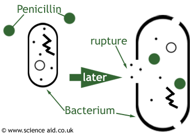
| Subclass | Agents | What it is for |
|---|---|---|
| Natural | Penicillin G, penicillin V potassium, penicillin G benzathine | Syphilis, gas gangrene, meningococcus. Good Gram-positive cocci, no Staphylococcus, no aerobic Gram-negatives |
| Aminopenicillins | Ampicillin, amoxicillin | Enterococcus, Listeria, endocarditis prophylaxis, upper respiratory infection, community-acquired pneumonia at high dose |
| With a beta-lactamase inhibitor | Augmentin, Unasyn, Zosyn | Adds Bacteroides and methicillin-susceptible Staphylococcus aureus. Skin and soft tissue, diabetic foot, animal and human bites |
| Penicillinase-resistant | Nafcillin, oxacillin, dicloxacillin | Built solely for methicillin-susceptible Staphylococcus aureus; increasingly defeated by methicillin resistance |
| Antipseudomonal | Piperacillin, piperacillin/tazobactam | Polymicrobial and nosocomial infection, intra-abdominal infection, Pseudomonas |
Dosage forms are worth separating from doses. Penicillin V potassium is the oral form because it is stable in stomach acid; penicillin G is intravenous; penicillin G benzathine is the long-acting intramuscular depot given as a one-time dose.
Resistance is beta-lactamase cleaving the beta-lactam ring. The inhibitors — sulbactam with ampicillin, tazobactam with piperacillin, clavulanate with amoxicillin — have no antibacterial activity of their own and irreversibly inactivate the enzyme.
Cephalosporins (objective 4b)
Good cerebrospinal fluid penetration, mostly renal elimination, and penicillin cross-sensitivity of less than 1% — lower than the figure usually quoted, and clinically important because a reported penicillin allergy does not by itself rule a cephalosporin out.
| Generation | Agents | Coverage |
|---|---|---|
| 1st | Cefazolin, cephalexin | Great Gram-positive (no Enterococcus), some Gram-negative. Surgical prophylaxis, cellulitis, urinary tract infection |
| 2nd | Cefotetan, cefoxitin, cefuroxime, cefprozil | More Gram-negative — Haemophilus, Neisseria, Proteus, Escherichia coli, Klebsiella |
| 3rd | Ceftriaxone, ceftazidime, cefotaxime, cefdinir, cefixime | Better Gram-negative, less Gram-positive. Ceftazidime adds Pseudomonas |
| 4th | Cefepime | Gram-negative and retained Gram-positive, antipseudomonal. No methicillin-resistant Staphylococcus aureus, no Enterococcus, no anaerobes |
| 5th | Ceftaroline; ceftolozane/tazobactam | Ceftaroline is the one with methicillin-resistant coverage. Ceftolozane is the antipseudomonal one |
Two agent-specific points that are easy to confuse and easy to test: ceftriaxone needs no dosage adjustment in renal insufficiency but cannot be used in the first 30 days of life, and cefotaxime is the one preferred in neonatal fever or sepsis.
Monobactams (objective 4c) and carbapenems (objective 4d)
Aztreonam covers Gram-negatives only — a spectrum the lecture describes as resembling the aminoglycosides, including Pseudomonas aeruginosa and Enterobacteriaceae, with no Gram-positive or anaerobic activity. Its defining property is that it has no cross-reactivity with other beta-lactams, so it can be used in truly penicillin-allergic patients.
Carbapenems — imipenem, meropenem, ertapenem, doripenem — are very broad: Gram-positive (not methicillin-resistant Staphylococcus aureus), Gram-negative, Pseudomonas (except ertapenem), and anaerobes. They resist hydrolysis by beta-lactamases, which is why they are the answer for extended-spectrum beta-lactamase producers, multidrug-resistant Gram-negatives, nosocomial infection and meningitis. Watch for seizures with imipenem.
1.5 · Objective 4 — Glycopeptides & lipopeptides (objective 4j)
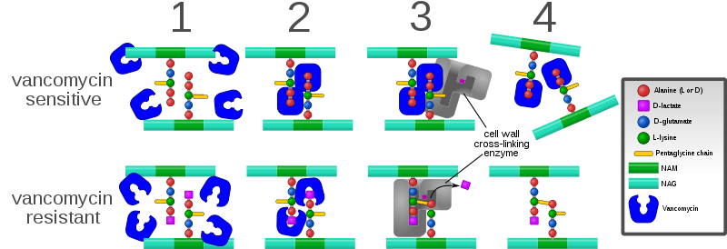
Vancomycin is not a beta-lactam. It also targets the cell wall, but it binds the two D-alanine residues on the peptide to block cross-linking rather than inactivating the enzyme — and because it covers the substrate rather than disabling an enzyme, resistance is harder to develop.
Coverage is Gram-positive only. Drug of choice for penicillin-allergy infections, methicillin-resistant Staphylococcus aureus, Clostridium difficile by mouth, endocarditis, osteomyelitis, and surgical prophylaxis in allergy.
Where the minimal inhibitory concentration is 2 mg/L or greater, the target ratio of area under the curve to minimal inhibitory concentration becomes difficult to achieve and alternative therapy such as linezolid may be needed — pushing the dose is not a reliable answer.
Daptomycin causes bacterial depolarization, inhibiting DNA, RNA and protein synthesis, and is bactericidal. Its one crucial limitation: it cannot be used in pneumonia. Monitor muscle pain and creatine phosphokinase.
Also tested
- Red man syndrome. It is rate-related, so the fix during a vancomycin infusion is to slow the infusion; 1 gram is infused over 60 minutes.
- Vancomycin trough. The goal is 10 to 15 or 15 to 20 micrograms per milliliter, depending on the indication.
- Vancomycin mechanism. A glycopeptide, not a beta-lactam, it differs mechanically from a penicillin: it binds two D-alanines rather than the enzyme.
- Vancomycin for Clostridium difficile colitis. The oral route treats it, because intravenous vancomycin will not reach the gut lumen.
1.6 · Objective 4 — Protein synthesis inhibitors
| Class | Subunit & mechanism | Key points |
|---|---|---|
| Macrolides (4e) erythromycin, clarithromycin, azithromycin | 50S; blocks transpeptidation | Gram-positive aerobes and atypicals — Legionella, Mycoplasma, Chlamydophila, Chlamydia. QT prolongation and torsades de pointes. Cytochrome P450 3A inhibition, erythromycin > clarithromycin > azithromycin |
| Lincosamides (4f) clindamycin | 50S | Gram-positive aerobes including methicillin-resistant Staphylococcus aureus, plus Gram-positive and Gram-negative anaerobes. No Gram-negative aerobic coverage. Toxin-mediated disease. Clostridium difficile and pseudomembranous colitis |
| Tetracyclines (4h) tetracycline, doxycycline, minocycline | 30S; binds 16S ribosomal RNA, blocks transfer RNA at the A site. Bacteriostatic | Excellent for atypicals and animal-borne organisms. Chelate cations — iron and calcium. Photosensitivity, tooth discoloration, avoid under 8 years and in the 2nd and 3rd trimesters |
| Aminoglycosides (4i) gentamicin, tobramycin, amikacin | 30S | Gram-negatives including Pseudomonas; Enterococcus at synergy dosing only. Post-antibiotic effect → once-daily dosing. Nephrotoxic and ototoxic |
| Oxazolidinones (4l) linezolid | 50S | Resistant Gram-positives — multidrug-resistant pneumococcus, methicillin-resistant Staphylococcus aureus, vancomycin-resistant Enterococcus. No Gram-negatives or anaerobes. Thrombocytopenia; serotonin syndrome with selective serotonin reuptake inhibitors, tyramine foods, pseudoephedrine |
| Streptogramins (4g) | 50S | Named in the syllabus and on the mechanism slide; the deck gives no dedicated agent slides |
The QT interval measures how long the ventricle takes to repolarize. Repolarization depends on potassium leaving the cell, and these drugs block the potassium channel that lets it out — the hERG channel, named in the figure on the drug-induced QT slide. Block it, repolarization takes longer, and the QT stretches. Stretch it far enough and the rhythm degenerates into torsades de pointes — French for “twisting of the points”, which is exactly what the tracing does, the amplitude waxing and waning around the baseline.
What raises the risk is stacking, not any single dose: a congenital long QT, several QT-prolonging drugs at once, or an electrolyte disturbance. This is why posaconazole is on the list at all — its own hypokalemia and hypomagnesemia are what push the QT out. A single course of azithromycin in a healthy patient is a different proposition from the same drug added to an antiarrhythmic in someone whose potassium is low. The treatment of choice for torsades is magnesium sulfate, two grams — described in lecture as the “two gram slam” and called out as worth remembering.
Tigecycline, a glycylcycline, binds the 30S subunit and is bacteriostatic. It is approved for complicated skin and complicated intra-abdominal infection, covering methicillin-resistant Staphylococcus aureus and Enterococcus faecalis but not vancomycin-resistant Enterococcus.
Also tested
- Once-daily aminoglycoside dosing. Aminoglycosides show a post-antibiotic effect, so killing persists after the level falls, and concentration-dependent killing favors a large single dose.
- Daptomycin. It depolarizes the membrane but cannot be used in pneumonia, because pulmonary surfactant inactivates it, making the lung the one site where it fails.
- Clindamycin. It is drug of choice for toxin-mediated disease, skin and soft tissue infection, osteomyelitis, surgical prophylaxis in penicillin allergy, and as part of intra-abdominal combination therapy; the toxin indication follows from inhibiting protein synthesis and so toxin production.
- Macrolide interactions. Metabolites inactivate CYP3A, raising substrate levels; the effect ranks erythromycin greater than clarithromycin greater than azithromycin, so azithromycin is the one to reach for when interactions matter.
- Aminoglycoside toxicities. Renal toxicity and ototoxicity define them, requiring renal dose adjustment; vancomycin shares both, which is why the combination is watched carefully.
- Aminoglycoside drug of choice. They are drug of choice for febrile neutropenia, sepsis and enterococcal synergy; Enterococcus is covered only at synergy dosing rather than as monotherapy.
- Linezolid. It is drug of choice for hospital and community MRSA, with no Gram-negative cover; it also covers multidrug-resistant pneumococcus and vancomycin-resistant Enterococcus.
- Macrolide interactions. Metabolites bind CYP3A subclass enzymes, forming an inactive complex and raising levels of substrates such as carbamazepine, cyclosporine, digoxin, midazolam and theophylline; severity is erythromycin greater than clarithromycin greater than azithromycin.
- Clarithromycin and digoxin. Clarithromycin raises digoxin levels through CYP3A4 inhibition, because macrolide metabolites form an inactive complex with CYP3A.
- Tetracycline precautions. They cause discoloration of teeth and depression of skeletal growth, so avoid them under 8 years old and in the second and third trimesters; both follow from binding calcium in developing bone and teeth.
- Prevpac. This regimen named for Helicobacter pylori combines clarithromycin, amoxicillin and lansoprazole: a macrolide, a penicillin and a proton pump inhibitor together.
- Daptomycin mechanism. It kills bacteria by causing bacterial depolarization, halting DNA, RNA and protein synthesis at once.
- Macrolide gastrointestinal effects. Nausea, diarrhea and abdominal pain are worst in children and young adults, because the drug stimulates gut motility.
- Aminoglycoside levels. The peak is drawn 30 minutes after the infusion ends, with troughs 15 to 30 minutes before the next dose.
- Linezolid monitoring. Platelets are monitored, because thrombocytopenia is the characteristic toxicity.
- Daptomycin and pneumonia. It cannot be used because it is inactivated in the lung, which is why it is excluded despite Gram-positive cover.
- Macrolide hepatotoxicity. The estolate salt is most associated with cholestatic hepatitis, and the reaction is rare overall.
- Tigecycline dosing. Hepatic function governs dosing, unlike most other agents in this group, which are renally adjusted.
- Macrolide drug interactions. Macrolide metabolites form an inactive complex with CYP3A, so substrate drug levels rise.
- Aminoglycoside dosing interval. Dosing has changed from every 8 hours towards every 24 hours, supported by the post-antibiotic effect.
- Tetracyclines and tick-borne illness. Tetracyclines treat Rocky Mountain spotted fever and Lyme disease, alongside acne and atypical pneumonia.
- Macrolide hearing loss. Transient hearing loss occurs with large intravenous doses or renal impairment, and the effect is transient.
- Macrolide gaps in coverage. Enterococci and most other Gram-negatives are outside macrolide coverage, whereas Haemophilus, Moraxella and Neisseria are covered.
- Clindamycin uses. Clindamycin is the drug of choice for toxin-mediated disease and osteomyelitis, and is also used for skin infection and for surgical prophylaxis in allergy.
- Macrolide QT prolongation. It becomes more dangerous with class Ia and III antiarrhythmics and electrolyte abnormalities; each pushes repolarization further, so the effects stack.
- Tendon rupture and antibiotics. Fluoroquinolones cause tendonitis and Achilles tendon rupture, with caution under 18 years old; peripheral neuropathy belongs to the same class.
- Linezolid. Linezolid is the drug of choice for hospital-acquired and community-acquired methicillin-resistant Staphylococcus aureus; it covers no Gram-negatives or anaerobes, and also covers multidrug-resistant pneumococcus and vancomycin-resistant Enterococcus.
- Tetracycline coverage. Tetracyclines cover Pseudomonas and Clostridium difficile poorly, while atypicals and animal-borne organisms are covered excellently.
- Aminoglycoside trough targets. The targeted trough is less than 1 for gentamicin and tobramycin, while amikacin is held below 5.
- Tigecycline coverage gap. Tigecycline covers complicated skin and intra-abdominal infection but does NOT cover vancomycin-resistant Enterococcus (VRE).
- Tetracycline tooth discoloration. Doxycycline causes the most tooth discoloration, more so than the other tetracyclines.
- Tigecycline. It is approved to treat complicated skin and intra-abdominal infection, and it covers Enterococcus faecalis but not the resistant form.
- Macrolides for Mycobacterium avium complex. Clarithromycin and azithromycin are used, with ethambutol and possibly rifabutin in disseminated disease.
- Clindamycin adverse effects. Hematological effects are neutropenia and thrombocytopenia, alongside rash and Clostridium difficile colitis.
- Intravenous tetracycline. Doxycycline is the tetracycline available intravenously.
- Fluoroquinolone central nervous system effects. They cause dizziness, insomnia and somnolence, and confusion is a particular risk in the elderly.
- Chlamydia trachomatis in infants. Erythromycin is the macrolide used for conjunctivitis or pneumonia in an infant, while azithromycin covers Chlamydia trachomatis more generally.
- Doxycycline adverse effect. Photosensitivity, such as a severe sunburn after brief sun exposure, is flagged as a tetracycline adverse effect and can occur with doxycycline.
1.7 · Objective 4 — DNA, folate and membrane agents
| Class | Mechanism | Key points |
|---|---|---|
| Fluoroquinolones (4k) ciprofloxacin, levofloxacin, moxifloxacin | Dual — inhibits DNA gyrase (topoisomerase II) forming a quinolone-DNA-gyrase complex with induced DNA cleavage, and inhibits topoisomerase IV | Levofloxacin has Pseudomonas coverage; moxifloxacin does not and must not be used for urinary tract infection. Chelated by iron, antacids, multivitamins, calcium and dairy. QT prolongation. Tendonitis and Achilles rupture, peripheral neuropathy, central nervous system toxicity; caution under 18. Overuse drives resistance, with Clostridium difficile as collateral damage |
| Folate synthesis inhibitors (4n) sulfamethoxazole/trimethoprim | Two sequential steps: sulfamethoxazole blocks para-aminobenzoic acid → dihydrofolic acid via tetrahydropteroic acid synthetase; trimethoprim blocks dihydrofolic acid → tetrahydrofolic acid via dihydrofolate reductase | Covers methicillin-resistant Staphylococcus aureus, not enterococci. Pneumocystis jirovecii treatment and prophylaxis, urinary tract infection, prostatitis. Stevens-Johnson syndrome and toxic epidermal necrolysis, blood dyscrasias. Raises the international normalized ratio significantly with warfarin via cytochrome P450 2C9 inhibition |
| Nitroimidazoles (4o) metronidazole | Interacts with bacterial DNA causing loss of helical structure and strand breakage | Gram-positive and Gram-negative anaerobes and parasites. Drug of choice for Clostridium difficile, intra-abdominal combination therapy, sexually transmitted infections. Disulfiram-like reaction with ethanol |
| Polypeptides (4m) polymyxin B, polymyxin E | Detergent-like interaction with the lipopolysaccharide of the Gram-negative outer membrane, displacing magnesium and calcium | Broad Gram-negative coverage. Resistance uncommon because the class went largely unused for 50 years, and use is expected to rise with multidrug resistance |
The polymyxins carry the only warnings this deck labels explicitly as black box: nephrotoxicity, neurotoxicity and neuromuscular blockade. Black box warnings rank third in what to weight for this exam — above ordinary adverse effects — so they are worth holding separately rather than folding into a general side-effect list.
Also tested
- Bactrim and warfarin. Starting Bactrim in a patient on warfarin raises the INR significantly, through CYP2C9 inhibition.
- Sulfamethoxazole/trimethoprim blood disorders. Thrombocytopenia, agranulocytosis and megaloblastic anemia can follow, grouped together as blood dyscrasias.
- Polymyxin black box warnings. Polymyxin carries three: nephrotoxicity, neurotoxicity and neuromuscular blockade.
- Polymyxin resistance. It is uncommon because the class went largely unused for the last 50 years; rising multidrug resistance is bringing it back, despite optimal regimens not being well studied.
- Bactrim. It both treats and prevents Pneumocystis jirovecii pneumonia, alongside urinary tract infection, bacterial prostatitis, orchitis and epididymitis.
- Sulfamethoxazole. It blocks para-aminobenzoic acid becoming dihydrofolic acid, one step upstream of trimethoprim.
- Sulfamethoxazole/trimethoprim in opportunistic pneumonia. It treats and prevents Pneumocystis jirovecii pneumonia, in both treatment and prophylaxis.
- Fluoroquinolone target. The better understood target is DNA gyrase, also called topoisomerase II, forming a complex that induces DNA cleavage.
- Levofloxacin versus ciprofloxacin. Levofloxacin has improved Gram-positive activity and Pseudomonas cover, which supports its use in community-acquired pneumonia.
- Trimethoprim / sulfamethoxazole interactions. This agent significantly raises the international normalized ratio in a patient on warfarin and causes hypoglycemia with sulfonylureas, so the warfarin patient needs closer monitoring.
- Polymyxins. They cover gram-negative organisms only, which is why they are reserved for resistant gram-negative infection.
- Fluoroquinolone dosing consideration. Moxifloxacin needs none, while ciprofloxacin and levofloxacin are renally adjusted.
1.8 · Objectives 5–8 — Antivirals
Eight general approaches are listed: block attachment, block uncoating, inhibit DNA or RNA synthesis, inhibit viral protein synthesis, inhibit specific viral enzymes, inhibit assembly, inhibit release, and stimulate the host immune system. Every agent below is one of those.
| Virus | What it causes |
|---|---|
| Herpes simplex type 1 | Mouth, face, skin, esophagus or brain |
| Herpes simplex type 2 | Genitals, rectum, hands or meninges |
| Varicella-zoster | Chickenpox and shingles |
| Cytomegalovirus | Retinitis, esophagitis, colitis |
| Agents | Mechanism | Used for |
|---|---|---|
| Acyclovir, valacyclovir (obj. 6) | Guanine analog lacking the sugar moiety; selectively phosphorylated by viral thymidine kinase, incorporated into viral DNA, and the missing sugar prevents elongation | Herpes simplex, varicella-zoster. Valacyclovir is the prodrug with far better oral absorption |
| Penciclovir, famciclovir (obj. 6) | Similar to acyclovir | Herpes simplex and varicella-zoster. Famciclovir is the oral prodrug; penciclovir is intravenous |
| Ganciclovir, valganciclovir (obj. 7) | Guanine analog, inhibiting similarly to acyclovir | Cytomegalovirus in transplant and immunocompromised patients. Valganciclovir is the better-absorbed oral prodrug |
| Oseltamivir (obj. 8) | Prodrug converted to its carboxylate form; inhibits neuraminidase so budding progeny cannot be cleaved free of the host cell | Influenza A and B. Oral only, renally adjusted |
Timing matters and is examinable. Oseltamivir must be started as soon as possible, within 48 hours; because it blocks release of new virus rather than clearing virus already present, late treatment has little to act on. Acyclovir given in the first 24 hours of chickenpox shortens the acute illness but does not cure the infection.
Adverse effects. Acyclovir: nausea, vomiting, rash, bone marrow suppression, central nervous system effects (seizures, delirium, tremor), and crystallization in the renal tubule — maintain hydration and renal function. Ganciclovir is the harder drug: neutropenia and thrombocytopenia, central nervous system effects including confusion, ataxia, seizures and coma, and about a third of patients must stop intravenous treatment because of side effects.
Also tested
- Nondepolarizing blocker paralysis. It paralyzes the small, fast muscles of the face and eye first and the diaphragm last, with recovery in reverse order.
- Oseltamivir route and adjustment. It is available orally only and requires renal dose adjustment.
- Acyclovir family. These drugs inhibit nucleic acid synthesis: the drug is incorporated into viral DNA and terminates the chain.
- Antiviral prodrug pairs. Valacyclovir is the prodrug of acyclovir, famciclovir of penciclovir, and valganciclovir of ganciclovir; in each case the prodrug exists to solve poor oral absorption of the parent.
- Oseltamivir resistance. It has been becoming a problem over time, a trajectory like that of the fluoroquinolones.
- Atracurium. It releases histamine, which separates it from the other nondepolarizing blockers.
- Nondepolarizing blockers. They relax skeletal muscle for intubation and act as adjuvants in anesthesia, including relaxing muscle enough to reduce a fracture or dislocation.
- Ganciclovir hematological toxicity. Neutropenia in 15 to 40 percent limits its use, with thrombocytopenia also common.
- Atracurium. This nondepolarizing agent releases histamine, which can cause a fall in blood pressure and flushing.
- Pediatric oseltamivir dosing. A child weighing above 23 up to 40 kilograms receives 60 milligrams twice daily.
- Influenza season. It generally runs from October to March, which frames when the drug is used.
- Valacyclovir versus acyclovir. Valacyclovir is a prodrug, and bioavailability rises from 22 to 70 percent.
- Host-directed antiviral approach. Stimulating the host immune system is the only one of the eight approaches aimed at the host side of the interaction.
- Oseltamivir. It inhibits neuraminidase so progeny cannot be released, blocking viral release rather than viral entry or replication.
- Viral enzymes and antivirals. Acyclovir needs thymidine kinase (a viral enzyme that switches it on); oseltamivir hits neuraminidase (a viral enzyme it shuts off).
- Oseltamivir timing. It must be started as soon as possible, within 48 hours of symptom onset; because it blocks release rather than killing virus already present, late treatment has little to act on.
- Oseltamivir in late influenza. Its use is limited once the 48-hour window for starting treatment has passed, as on day 4 of influenza, because it blocks release of new virus rather than clearing existing virus.
- Penciclovir and famciclovir. Famciclovir is the oral prodrug, considerably better absorbed; penciclovir is the intravenous parent with poor oral bioavailability.
- Herpesvirus antiviral targets. Herpes simplex, varicella-zoster and cytomegalovirus are grouped as targets for antiviral therapy; the first two share the acyclovir family, while cytomegalovirus needs ganciclovir.
- Intravenous parent antivirals. Penciclovir and ganciclovir are given intravenously as the parent compound, each with an oral prodrug available: famciclovir and valganciclovir respectively are the better-absorbed oral forms.
- Ganciclovir versus acyclovir tolerability. Ganciclovir causes marked neutropenia and thrombocytopenia, with about a third of patients stopping intravenous treatment; acyclovir's bone marrow suppression is listed, but ganciclovir's is far more limiting.
- Cisatracurium versus atracurium. Cisatracurium replaced atracurium because it has fewer adverse effects, being the isomer of the parent drug.
- Oseltamivir. It targets influenza A and B, in a season running roughly October to March, and resistance has been becoming a problem over time.
- Famciclovir. This anti-herpes prodrug has 77 percent bioavailability, against 5 percent for intravenous penciclovir.
1.9 · Objective 9 — Antifungals
Also tested
- Topical imidazoles. Clotrimazole is a topical imidazole rather than a systemic azole; the topical group also includes econazole, miconazole, butoconazole, tioconazole, oxiconazole, sulconazole and sertaconazole.
- Griseofulvin adverse effects. They include headache in about 15 percent, mental confusion, fatigue and blurred vision, with induction of cytochrome P450 1A2 and 2C9; it induces enzymes where the azoles inhibit them.
- Oseltamivir timing. It must start within 48 hours, so on day 4 of influenza the window has passed.
- Intravenous acyclovir. It crystallizes in the renal tubule, so good hydration prevents a rising creatinine.
- Fluconazole in vaginal candidiasis. A single dose is enough because it is excreted in the urine; it also has the best oral absorption of the azoles.
- Predisposing factors for fungal infection. Antibiotic therapy predisposes to fungal infection by removing competition, alongside loss of barriers and immunodeficiency.
- Lipid amphotericin B formulations. They were developed to reduce toxicity compared with the deoxycholate formulation, at 20 to 50 times the cost.
- Itraconazole in women of childbearing age. Itraconazole is teratogenic, so a pregnancy test must be checked first.
- Ganciclovir toxicity. Neutropenia is expected in 15 to 40% of patients, plus thrombocytopenia and CNS effects.
- Echinocandin adverse reactions. They include tachycardia, headache, insomnia, hypokalemia, hypomagnesemia and blood dyscrasias; the electrolyte disturbances overlap with amphotericin B's, despite a completely different mechanism.
- Amphotericin B. It forms pores in ergosterol membranes, leaking ions; the leak is why electrolyte disturbance is such a prominent toxicity. The drug is derived from a soil Streptomycetaceae.
- Intravenous voriconazole in renal failure. Its vehicle, cyclodextrin, accumulates when renal function is impaired; the concern is the vehicle rather than the drug itself.
- Fungal cell wall target. The fungal wall contains chitin and glucans rather than peptidoglycan; beta-lactams and vancomycin act on peptidoglycan, which fungi do not have, so antibacterials are useless against them.
- Amphotericin B spectrum. It is indicated against Cryptococcus, Blastomyces, Histoplasma, Candida, Coccidioides and Aspergillus, the last reserved for invasive infection.
- Posaconazole adverse effects. QT prolongation, fever, diarrhea, hypokalemia, hypomagnesemia and thrombocytopenia; the QT effect places it alongside the macrolides and fluoroquinolones as a drug to watch in combination.
- Voriconazole enzymes. Voriconazole affects cytochrome P450 2C19, 2C9 and 3A4, a broader set than the other azoles, which is part of why it needs care in combination.
- Azole spectrum. Azoles cover Candida, Cryptococcus, Blastomyces, Histoplasma, Coccidioides and Aspergillus; the individual azoles are then separated by their own quirks.
- Amphotericin B electrolyte and renal effects. Hypokalemia and hypomagnesemia, hypotension, uremia in about 80 percent with decreased filtration, and renal tubule damage mitigated by hydration with normal saline.
- Itraconazole uses. Itraconazole is useful in blastomycosis, histoplasmosis, onychomycosis, and febrile neutropenic patients not responding to antibiotics; it has an active metabolite and a wider spectrum than the ketoconazole it replaced.
- Amphotericin B infusion reactions. Fever and chills are driven by interleukin-1 and tumor necrosis factor, a cytokine response rather than an allergy, so patients are pretreated with acetaminophen, antihistamines and corticosteroids.
- Allylamines. Naftifine and terbinafine are the allylamines; they inhibit ergosterol production and prevent cell wall synthesis, with local irritation as the adverse reaction.
- Ringworm. Tinea corporis is the tinea infection commonly called ringworm; despite the name no worm is involved, and it describes the annular appearance on the body surface.
- Flucytosine. It is used against Cryptococcus neoformans and Candida, and it is given in combination rather than alone because resistance develops readily.
- Why antibacterials fail on fungi. Fungi are eukaryotic, with a rigid cell wall containing chitin, a cell membrane built on ergosterol, different ribosomes and a distinct nuclear membrane. Every antifungal class exploits one of these differences.
- Nystatin. This polyene treats oral candidiasis; it is available as oral preparations and a topical powder, with systemic effects limited by poor absorption.
- Voriconazole. It is a fluconazole derivative introduced in 2002, which then took over systemic aspergillosis from amphotericin B.
- Amphotericin B formulations. The conventional one is amphotericin B deoxycholate, marketed as Fungizone; the three lipid alternatives are the lipid complex, the colloidal suspension and the liposomal form.
- Azole breadth. Azoles treat athlete's foot, ringworm, jock itch and onychomycosis as well as the systemic mycoses, from superficial tinea through Candida, Cryptococcus, Blastomyces, Histoplasma, Coccidioides and Aspergillus.
- Predisposing categories for fungal infection. Poorly controlled diabetes is the example of the metabolic abnormality category.
- Amphotericin B electrolytes. Amphotericin B is accompanied by low potassium and low magnesium (hypokalemia and hypomagnesemia).
- Echinocandins. The class comprises caspofungin, micafungin and anidulafungin, and all three inhibit 1,3-beta-D-glucan synthase in the cell wall.
- Fungal resistance to antibiotics. Fungi are resistant because they are eukaryotic, with different ribosomes, and they have a distinct nuclear membrane.
- Itraconazole. It replaced ketoconazole because itraconazole has a wider spectrum.
- Voriconazole and aspergillosis. Following its introduction in 2002, voriconazole replaced amphotericin B for systemic aspergillosis.
- Oral ketoconazole. It is taken with meals, and it is also available in topical form.
Why there is more than one antifungal
The same trick as the beta-lactams in 1.3 works here, and it is shorter. Fungi are eukaryotes, so the hard part is finding something to poison that we do not also have. Ergosterol is that something — and the classes are best held as three different answers to it.
| Class | What it does about ergosterol | What that costs |
|---|---|---|
| Polyenes amphotericin B, nystatin | Binds the ergosterol already in the membrane and punches pores in it. Fast, and it does not need the fungus to be growing | Ergosterol resembles our cholesterol, so our membranes suffer too — the infusion fever and chills, hypotension, renal injury and potassium and magnesium wasting. Nystatin is too toxic to give systemically at all |
| Azoles fluconazole, itraconazole, voriconazole, posaconazole, ketoconazole | Stops ergosterol being MADE rather than attacking it once it is there — blocking the demethylase | That demethylase is a cytochrome P450 enzyme, and ours are the same family. The whole class is therefore an interaction problem, which is the price of being oral, broad and far gentler |
| Echinocandins caspofungin, micafungin, anidulafungin | Ignores ergosterol entirely. Attacks β-1,3-glucan in the cell wall — a structure we do not have at all | Neither polyene toxicity nor azole interactions. The cost is a narrow spectrum and intravenous administration only |
Fungi are eukaryotic, with a rigid cell wall containing chitin, a cell membrane built on ergosterol, different ribosomes and a distinct nuclear membrane. They are resistant to antibiotics, and every antifungal class exploits one of those differences.
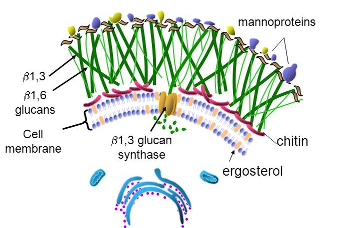
Predisposing factors: loss of barriers (burns, surgery, catheters); immunodeficiency (cancer, human immunodeficiency virus infection, transplant, chemotherapy); metabolic abnormality (diabetes); suppression of competing organisms (antibiotics); and a warm moist environment (diaper rash, athlete's foot). Note that treating a bacterial infection is itself a fungal risk factor.
| Depth | Organisms |
|---|---|
| Systemic — internal organs | Aspergillus, Blastomyces, Candida, Coccidioides, Cryptococcus, Histoplasma, Zygomycetes |
| Subcutaneous — skin layers | Chromomycosis, Pseudallescheriasis, Sporotrichosis |
| Superficial — hair, nails, mucous membranes | Epidermophyton, Microsporum, Trichophyton |
| Class | Target & mechanism | Agents and key points |
|---|---|---|
| Polyenes (9b) | Membrane — bind ergosterol already present, forming channels; oxidative damage | Amphotericin B, nystatin, natamycin. Lipid formulations cost 20–50× more with reduced toxicity. Fever and chills from interleukin-1 and tumor necrosis factor — pretreat. Hypokalemia, hypomagnesemia, hypotension, renal tubule damage — hydrate with normal saline. Nystatin is poorly absorbed, so topical and oral only |
| Azoles (9c) | Membrane — inhibit fungal cytochrome P450 14-alpha-demethylase, blocking lanosterol → ergosterol | Fluconazole: best oral absorption, penetrates the central nervous system, cryptococcal meningitis and candidiasis, teratogenic in animals. Voriconazole: systemic aspergillosis, vision effects in ~30%, cyclodextrin vehicle accumulates in renal failure, teratogenic in animals. Posaconazole: the only azole effective against the Zygomycetes, QT prolongation. Itraconazole: blastomycosis, histoplasmosis, onychomycosis, teratogenic. Ketoconazole: rarely used — no central nervous system entry, strong cytochrome P450 3A4 inhibition |
| Echinocandins (9a) | Cell wall — inhibit 1,3-beta-D-glucan synthase | Caspofungin, micafungin, anidulafungin. Esophageal candidiasis, refractory aspergillosis, febrile neutropenia. Tachycardia, headache, insomnia, hypokalemia, hypomagnesemia |
| Allylamines (9d) | Membrane — inhibit squalene epoxidase | Naftifine (topical), terbinafine (oral and topical). Superficial dermatophytes. Fingernails 6–12 weeks, toenails up to 12 months |
| Mitotic inhibitors (9e) | Cell division — interrupts mitotic spindles | Griseofulvin, from Penicillium griseofulvum. Deposited in keratin precursor cells. Scalp ~1 month, fingernails 6–9 months, toenails up to 12 months. Absorption increased by a high-fat meal. Not effective against Candida; fungistatic. Induces cytochrome P450 1A2 and 2C9 |
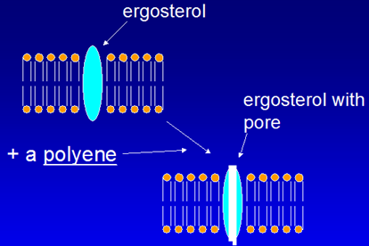
Flucytosine sits outside that scheme: it is converted to 5-fluorouridine by cytosine deaminase, an enzyme human cells lack, and then inhibits thymidylate synthase. Used with amphotericin B in cryptococcal meningitis and with itraconazole in chromoblastomycosis. Bone marrow suppression, hepatotoxicity, gastrointestinal upset, rash.
The tinea names are worth knowing outright: tinea pedis athlete's foot, tinea corporis ringworm, tinea cruris jock itch, tinea unguium onychomycosis of the nails.
1.10 · Taught but not in the objectives
They are included here and in the antifungal quizzes because he taught them, but they appear in no syllabus objective — objectives 4, 5 and 9 cover antibacterials, antivirals and antifungals only. Worth confirming their status before spending time on them. Tolnaftate is in a similar position: it distorts hyphae and stunts mycelial growth, treats tinea pedis, cruris and corporis but not tinea unguium, and is topical only.
Also tested
- Albendazole and mebendazole. They block helminth microtubules and glucose uptake, leading to parasite death.
- Benzimidazoles (albendazole, mebendazole). They inhibit formation of helminth microtubules and block glucose uptake, leading to parasite death.
- Pyrantel pamoate. It releases acetylcholine and inhibits cholinesterase, acting as a depolarizing neuromuscular blocker that causes paralysis and death of the parasite; it is used for pinworm and hookworm.
- Pyrantel pamoate paralysis. It acts as a depolarizing neuromuscular blocker by releasing acetylcholine and inhibiting cholinesterase.
- Tolnaftate spectrum. Tolnaftate is effective against tinea pedis, tinea cruris and tinea corporis, but not tinea unguium; it works by distorting hyphae and stunting mycelial growth, and is topical only.
2 · Dermatology Medications
Adam Wood, Pharm.D., DABAT
Instructional Objectives
- Identify dermatologic drug classes and commonly prescribed dermatologic drugs.
- Describe the molecular mechanism of action of dermatologic drugs.
- Identify indications for commonly used dermatologic drugs.
- Describe absorption, distribution, metabolism, and excretion of dermatologic drugs.
- Summarize side effects and toxic manifestations of dermatologic drugs.
- Describe adverse effects of dermatologic drugs.
- Identify contraindications for dermatologic drugs.
- Discuss potential drug-drug, drug-food, and drug-herb interactions with dermatologic drugs.
- List commonly used protocols and patient monitoring for dermatologic drugs.
- Outline appropriate patient education for dermatologic drugs.
Four of the ten objectives above are exactly those four — 3, 5 and 6, 7, and 10 — while mechanism is a single objective. The syllabus was already weighted the way she is telling you to study. This guide and the quizzes follow that weighting: mechanism is covered, but it is not what most questions turn on.
Note the scope limit hiding in her wording: the indication that counts is the one discussed in lecture, not everything the drug is licensed for.
2.1 · Objectives 1 & 4 — Vehicles, penetration and the depot effect
Topical dermatology is the one place where the vehicle is part of the prescription. Four variables change how much drug actually arrives.
| Variable | What it means |
|---|---|
| Regional variation | Scrotum, face, axilla and scalp are more permeable. The same tube does very different things in different places. |
| Concentration gradient | More concentration means more transfer. The worked example is corticosteroid resistance overcome by raising the concentration. |
| Dosing schedule | Skin acts as a reservoir — the depot effect — which may permit once daily dosing of a short acting drug. |
| Vehicle and occlusion | The vehicle can dramatically alter permeability, may be therapeutic in itself, and occlusion increases efficacy — with the lecture raising toxicity in the same breath. |
Also tested
- Occlusion. It increases efficacy, but it also raises the question of increased toxicity, so the gain is not a free benefit.
- Cream versus ointment. A cream is an oil in water emulsion, whereas an ointment is water in oil.
- Corticosteroid resistance. It can be overcome by increasing the concentration applied, since a steeper gradient increases drug transfer.
- Depot effect. Skin acts as a reservoir, allowing once daily dosing. The reservoir lets a short acting drug be given less often than its half-life suggests.
- Ointment vehicle. Ointment should be avoided in intertriginous areas because its occlusion is moderate to high.
2.2 · Objectives 1–3 — Acne: four factors, one target
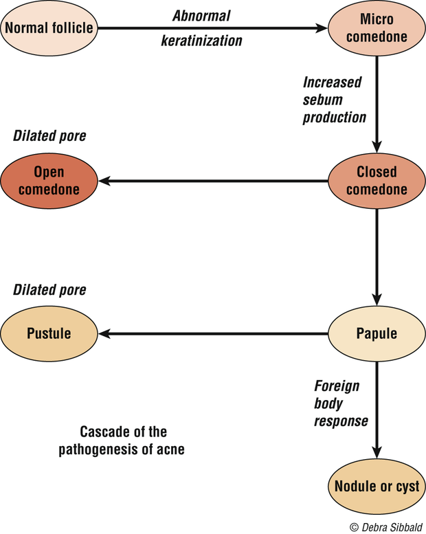
Acne is multifactorial, and the lecture gives four major factors: increased sebum production, altered keratinization with hyperproliferation of the ductal epidermis, bacterial colonization with Propionibacterium acnes, and release of inflammatory mediators. Every drug in the section attacks one of them.
The cascade runs: pooled sebum creates anaerobic conditions → P. acnes proliferates → a T cell response drives inflammation; bacterial lipase hydrolyses triglycerides into free fatty acids, keratinization increases, microcomedones form, and cytokines generate pus.
Also tested
- Topical acne therapy. It only works where it is applied, so the whole affected area is treated rather than visible lesions alone.
- Season and acne. Acne is worse in winter and better in summer, though heat and humidity themselves induce comedones.
- Stress and acne. Stress contributes by increasing glucocorticoid secretion, listed as the physiological contributory factor.
- Acne lesions. They divide into noninflammatory comedones and inflammatory papules and nodules; that split decides whether topical or systemic therapy is chosen.
- Drug-induced acne after stopping a steroid. Acne initially worsens because inflammation increases as the steroid stops, so the eruption looks worse before it settles.
- Acne drivers. Sebum, keratinization, bacteria and inflammation are the four factors, making acne a multifactorial disease.
- Pooled sebum. It creates anaerobic conditions for bacteria, allowing Propionibacterium acnes to proliferate.
2.3 · Objectives 2–7 — The acne drugs
![Venn diagram of acne pathogenesis with three overlapping factors — abnormal keratinization of the follicle, Propionibacterium acnes proliferation and abnormal sebum — leading to an inflammatory response, with the drugs that act on each factor listed around it: salicylic acid, benzoyl peroxide, topical retinoids and isotretinoin for keratinization; benzoyl peroxide, topical and oral antibiotics and isotretinoin for the organism; antiandrogens, isotretinoin, topical and oral antibiotics, corticosteroids and estrogens for sebum; and corticosteroids and antibiotics for the inflammatory response.](pharm-exam-1-study-guide-images/014.png)
| Drug | Mechanism | What to tell the patient |
|---|---|---|
| Benzoyl peroxide | Crosses the stratum corneum unchanged, then converts to benzoic acid, active against P. acnes; peeling and comedolytic | It bleaches hair, clothing and bedding. Start low, once daily, and build up |
| Azelaic acid | Not fully understood — antimicrobial, plus inhibiting testosterone to dihydrotestosterone conversion | Give it six to eight weeks of continuous use. Can cause hypopigmentation |
| Topical retinoids | Correct abnormal follicular keratinization, reduce P. acnes, reduce inflammation. First line for comedonal acne | Avoid in pregnancy. Photosensitivity and severe sunburn; tretinoin is photolabile so apply at night |
| Topical antibiotics | Clindamycin preferred; erythromycin losing efficacy to resistance | No systemic side effects |
| Isotretinoin | Systemic retinoid, effective in one to three months | Contraindicated in pregnancy and breastfeeding, iPledge; raised serum lipids; monitor for depression |
| Tetracyclines | Chelate calcium ions, preventing neutrophil and monocyte chemotaxis — an anti-inflammatory action separate from killing | Contraindicated under 8 years and in pregnancy |
Also in the section: salicylic acid (keratinolytic, few supporting studies); antiandrogens — spironolactone, and oral contraceptives in some women; intralesional steroids for individual nodules, with adrenal suppression from systemic absorption and local tissue atrophy as the costs.
Also tested
- Irritation from topical acne agents. Most irritate, which can lead to patient discontinuation, so start with a lower strength and increase gradually; anticipating the irritation keeps a patient on therapy.
- Washing in acne. Do not wash too frequently; twice a day balances cleanliness against drying and irritation, and once rinsed off no active product remains on the skin.
- Topical retinoid irritation. Erythema, desquamation, burning and stinging decrease with time and with emollients; patients must be told they settle, or they may stop the drug in week two.
- Starting acne topicals. Begin at a lower strength because most cause irritation and patients stop; increase the strength gradually as tolerated.
- Isotretinoin skin and appendage effects. These are retinoid dermatitis, alopecia and brittle nails, alongside arthralgia and headaches.
- Topical antibiotics in acne. Their advantage is that they lack systemic side effects, which separates them from oral antibiotics.
- Washing with acne. Patients should wash twice a day, because over-washing causes drying and irritation.
- Tetracyclines. They must not be given to children under eight years and pregnant women.
- Benzoyl peroxide. After it penetrates the stratum corneum, it is converted to benzoic acid, which is active against Propionibacterium acnes; it crosses unchanged and is converted once through.
- Topical retinoid. It is first line for noninflammatory, comedonal acne; for inflammatory acne it is often combined with other agents rather than used alone.
- Isotretinoin. It causes increased serum lipids, alongside retinoid dermatitis, photophobia, arthralgia, headaches, alopecia and brittle nails.
- Topical retinoic acid. It corrects keratinization and reduces P. acnes and inflammation, though the mechanism is not completely understood.
- Tetracycline restriction in skin disease. Tetracyclines are contraindicated under 8 years old and in pregnancy, the same rule that governs systemic use.
- Isotretinoin mood monitoring. Patients on isotretinoin must be monitored for developing depression.
- Isotretinoin in pregnancy. Isotretinoin is contraindicated in pregnancy and breastfeeding, and men should avoid it as well; the iPledge program exists around exactly this risk.
- Topical antibiotic for acne. Clindamycin is preferred, though its efficacy is falling over time because of Propionibacterium acnes resistance.
- Benzoyl peroxide in acne. It is used when resistance has made a topical antibiotic less useful and is often combined with it, which slows the resistance eroding clindamycin and erythromycin.
- Acne after benzoyl peroxide irritation. When benzoyl peroxide is stopped because of irritation, the next step is a topical retinoid, first-line therapy for comedonal acne; adapalene in this class tends to be less irritating.
- Systemic antibiotic for acne. Tetracyclines are the usual choice because they are safe, effective and inexpensive, and they are the most commonly used group.
2.4 · Objectives 3, 9 & 10 — Atopic dermatitis and the steroid ladder
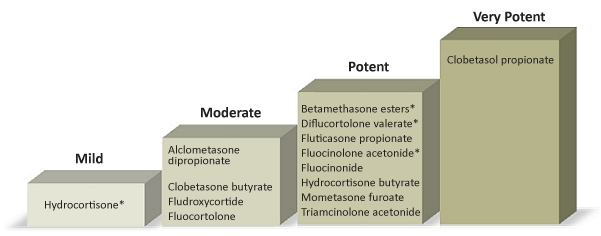
Atopic dermatitis is chronic inflammation with pruritus, part of the atopic triad with asthma and allergic rhino-conjunctivitis, and skin barrier dysfunction plays the major role. The major indicators are pruritus, rash in typical areas, chronic or repeated symptoms, and family history; raised immunoglobulin E and positive skin tests are minor ones.
Local effects are skin atrophy, acne, rosacea and allergic dermatitis to the vehicle. Systemic effects — from a topical drug — are adrenal suppression, infections, hyperglycemia, glaucoma, cataracts and growth retardation in children.
Topical immunomodulators (tacrolimus, pimecrolimus) inhibit activation of T cells, mast cells and keratinocytes. They are second line after topical steroids, carry a possible cancer risk, should be avoided in the immunosuppressed, and need counseling on burning and high SPF sunscreen.
Also tested
- Topical tacrolimus and pimecrolimus. Patients with weakened immune systems should avoid them, given the possible cancer risk.
- Home care in childhood atopic dermatitis. Advise lukewarm baths, lubricant afterward, short nails and no overheating, along with distracting the child, removing irritants and allergens, and maintaining hydration.
- Steroid step-down. After an exacerbation treated with a medium to high potency steroid, use it for one to two weeks, then switch to a lower potency rather than continuing at strength.
- Night-time itching in childhood eczema. A sedating antihistamine helps, alongside short fingernails and lukewarm baths.
- Least potent corticosteroid class. Class 7, which is hydrocortisone, is the least potent, at strengths from 0.5 to 2.5 percent.
- Sedating antihistamine in atopic dermatitis. It is advised for a child to reduce night-time itching, using the sedating property for the itch that disrupts sleep.
- Intralesional steroid injection of a nodule. Two problems follow: systemic absorption leading to adrenal suppression, and local tissue atrophy. Both are consequences of injecting a steroid into the lesion.
- Class 1 superpotent topical corticosteroids. Clobetasol propionate 0.05 percent is class 1 superpotent, along with betamethasone dipropionate ointment.
- Class 1, superpotent agent. Clobetasol propionate is the class 1, superpotent agent, listed in class 1 in cream, ointment, lotion, spray, shampoo and foam forms.
- Oral corticosteroid taper in atopic dermatitis. The course needs a taper to prevent a flare-up; the taper protects against rebound rather than against withdrawal symptoms alone.
2.5 · Objectives 1–3 — Topical antibiotics, antifungals, antivirals
| Agent | Mechanism | Coverage / use |
|---|---|---|
| Bacitracin | Peptide; prevents cell wall synthesis | Gram positives; no systemic toxicity |
| Mupirocin | Binds bacterial transfer RNA, stopping protein synthesis | Gram positive aerobes esp. MRSA; eliminates nasal carriage of S. aureus |
| Polymyxin B | Interrupts the cytoplasmic membrane | Gram negatives; avoid on open or denuded skin in high doses — neuro- and nephrotoxicity |
| Aminoglycosides | Inhibit protein synthesis | Gram negatives; neomycin frequently sensitizes |
| Azoles | Inhibit fungal cytochrome P450, preventing cell wall formation | Topical and vaginal; treatment is prolonged, two to three weeks |
| Ciclopirox | Blocks uptake of precursors at the fungal cell wall | Nail lacquer for onychomycosis — less than 12% effective |
| Allylamines | Inhibit ergosterol production | Naftifine, terbinafine |
| Tolnaftate / nystatin | — | Tolnaftate has no Candida activity; nystatin is the candidal agent, no oral absorption |
| Acyclovir, penciclovir | Synthetic guanine analogs | Recurrent orolabial herpes simplex |
| Imiquimod | Immunomodulator — interferon alpha, tumor necrosis factor alpha, interleukins | Warts, actinic keratoses, basal cell carcinoma |
Also tested
- Mupirocin. Beyond ordinary skin infection, it is used to eliminate nasal carriage of Staphylococcus aureus; its coverage is most gram positive aerobes, especially meticillin-resistant Staphylococcus aureus.
- Imiquimod schedule. It is applied two to five times per week, a weekly schedule rather than a daily one.
- Topical neomycin. It frequently causes sensitization, and the class can also accumulate systemically.
- Azole plus corticosteroid. The combination is used for more rapid symptom relief: the steroid addresses symptoms while the antifungal addresses the organism.
- Topical antifungal for vulvovaginal candidiasis. Clotrimazole is the one used, by topical and vaginal application.
- Topical azole plus corticosteroid. The combination gives more rapid symptom relief, though the antifungal course still runs two to three weeks.
- Topical azole course. Treatment is generally prolonged, on the order of two to three weeks, and stopping early is how a treated infection returns.
- Ciclopirox nail lacquer. For onychomycosis it is less than twelve percent effective, and saying so up front keeps expectations honest for a months-long treatment.
- Imiquimod. It stimulates peripheral mononuclear cells to release interferon alpha and macrophages to produce tumor necrosis factor alpha and interleukins, making it an immunomodulator rather than a directly cytotoxic agent.
- Polymyxin B warning. Avoid using it on open wounds or denuded skin in high doses, because of neurotoxicity and nephrotoxicity risk; loss of the barrier turns a topical agent into a systemic exposure.
- Ciclopirox nail lacquer. For onychomycosis it is less than 12 percent effective, which is why it disappoints in practice.
- Vulvovaginal candidiasis. Topical azoles are the topical antifungals used, namely clotrimazole, miconazole and sertaconazole, applied topically and vaginally.
- Nystatin absorption. Nystatin has no oral absorption, which is why it is used for cutaneous and mucosal candidal infection rather than systemically.
3 · Principles of Autonomic Nervous System Pharmacology
Adam Wood, Pharm.D., DABAT
Instructional Objectives
- Recall the gross organization of the nervous system with particular attention to the sympathetic and parasympathetic divisions of the autonomic nervous system (ANS)
- Explain the mechanism whereby nerve impulses are carried from the brain to effector organs of the ANS and contrast this with the efferent mechanism of the somatic system
- Classify the neurotransmitters released and the types of receptors found within the ANS
- Predict the effects of adrenergic stimulation, adrenergic inhibition, cholinergic stimulation and cholinergic inhibition on effector organs of the ANS (i.e., “fight or flight” and “rest and digest”)
- Identify the location and effects of alpha-one, alpha-two, beta-one, and beta-two stimulation and inhibition on associated organs with regard to the sympathetic division of the ANS
- Summarize the synthesis, release, and subsequent destiny of neurotransmitters involved in ANS physiology
- Outline the mechanism of action, pharmacokinetics, indications, contraindications, and major adverse effects for the following drug categories:
- Cholinergic agonists
- Cholinergic antagonists
- Adrenergic agonists
- Adrenergic antagonists
Worth seeing the shape this gives the lecture: objectives 1 to 6 are physiology and receptor anatomy, and only objective 7 is drug-shaped. This is a physiology lecture with a drug section attached, not a drug lecture — which is why the receptor map below is worth more than any single agent.
3.1 · Objectives 1–2 — How the system is wired
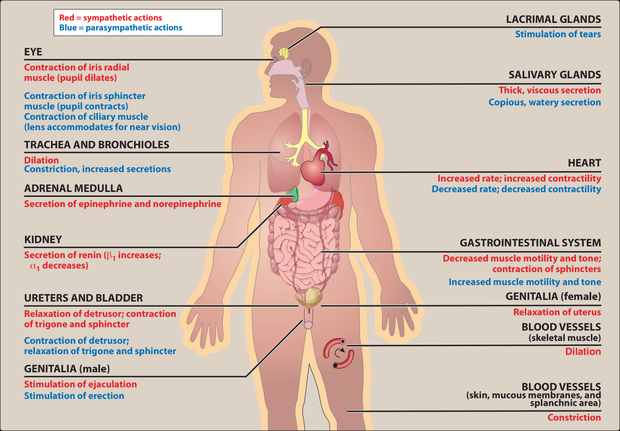
Nervous system → central (brain, spinal cord) and peripheral. Peripheral → afferent (to the center; the example is sensing pressure in the carotid sinus and aortic arch) and efferent (away). Efferent → somatic (voluntary, muscle) and autonomic (involuntary). Autonomic → enteric, parasympathetic, sympathetic.
Also tested
- Inhibitory transmitters. Gamma-aminobutyric acid is the major inhibitory transmitter in the brain, while glycine is the inhibitory transmitter used by spinal cord neurons.
- Dopamine. It has multiple functions depending on location and is usually inhibitory, in contrast to acetylcholine, which is usually excitatory.
- Major brain neurotransmitters. Gamma-aminobutyric acid is the major inhibitory neurotransmitter in the brain, while glutamate is the most common excitatory one.
- Autonomic efferent pathway. It has two sections: a preganglionic neuron centrally, then a postganglionic one, which is generally nonmyelinated.
- Efferent division of the peripheral nervous system. It splits into somatic, under voluntary control, and autonomic, under involuntary control; afferent carries signals to the central nervous system, efferent carries them away.
- Enteric division. It is called the brain of the gut because it works independently of the central nervous system, though both other divisions still modulate it.
- Afferent division. The afferent division of the peripheral nervous system carries signals towards the central nervous system and drives reflex regulation such as carotid sinus sensing.
- Norepinephrine. It acts as both a neurotransmitter and a hormone, and it also regulates normal brain processes, usually excitatory.
3.2 · Objectives 3, 5 & 6 — Transmitters and receptors
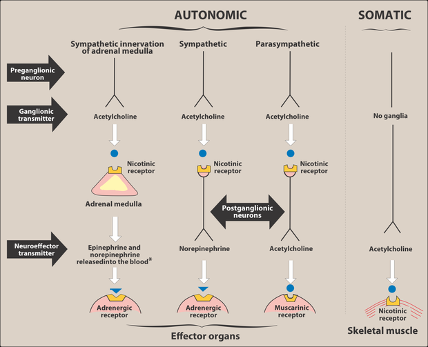
| Receptor | Where | Note |
|---|---|---|
| M1 | Neurons, gastric parietal cells | Five subclasses; only M1, M2 and M3 are functionally characterized |
| M2 | Neurons, cardiac cells, smooth muscle | |
| M3 | Neurons, bladder, exocrine glands, smooth muscle | |
| Nicotinic | CNS, adrenal medulla, autonomic ganglia, neuromuscular junction | Five subunits, ligand-gated ion channel; two acetylcholine molecules open it to sodium |
| Alpha-one | Postsynaptic, on the effector organ | Alpha potency: epinephrine ≥ norepinephrine >> isoproterenol |
| Alpha-two | Presynaptic nerve endings | |
| Beta | Cardiac (beta-one), airway and vessels (beta-two) | Beta potency: isoproterenol > epinephrine > norepinephrine |
Also tested
- Noncatecholamine half-lives. Noncatecholamines have longer half-lives because they are not substrates for the inactivating enzymes; their greater lipid solubility also increases central penetration.
- Catecholamine central-type effects. Catecholamines cause anxiety, tremor and headache. These are described as CNS-like effects even though the drugs are too polar to enter the brain.
- Oral epinephrine. Epinephrine is ineffective if swallowed because it is inactivated by intestinal enzymes, which is why it is given by injection, endotracheal tube or inhalation.
- Beta-two agonist versus epinephrine in asthma. A selective beta-two agonist is preferred in chronic asthma for its longer duration of action. Epinephrine reverses acute bronchospasm, while albuterol covers chronic treatment.
- Atropine source. Atropine is derived from deadly nightshade, jimson weed and mandrake, and scopolamine comes from the same family.
- Cell signaling types. The three general types are hormones, local mediators and neurotransmitters; the neurotransmitters of interest here are acetylcholine, norepinephrine and epinephrine.
- Amphetamine. It is used for hyperactivity, narcolepsy and appetite control, through raised blood pressure, cardiac stimulation and central activity.
- Albuterol versus epinephrine. Albuterol is preferred for chronic asthma because it has a longer duration and less cardiac stimulation, as a selective beta-2 agonist.
- Amphetamine uses. It treats hyperactivity, narcolepsy and appetite control, alongside its central stimulant activity.
- Cholinergic agonist synonyms. A cholinergic agonist is also called a parasympathomimetic or a cholinomimetic.
- Source of atropine. Atropine comes from deadly nightshade, Atropa belladonna, one of several plants of the Solanaceae family.
- Duration of noncatecholamines. They last longer because catechol-O-methyltransferase does not inactivate them and they are poor substrates for monoamine oxidase.
- Shared catecholamine properties. Catecholamines share high potency and rapid inactivation, along with poor penetration into the brain.
- Amphetamine at the adrenergic nerve. It blocks reuptake and releases catecholamines, raising blood pressure and cardiac stimulation.
- Abrupt propranolol withdrawal. Stopping it abruptly risks arrhythmias because beta receptors have been up-regulated, leaving the heart hypersensitive to catecholamines.
- Alpha receptor potency. Epinephrine is at least equal to norepinephrine, far above isoproterenol; the beta order runs the other way with isoproterenol first.
- Acetylcholine's cardiovascular effects. Acetylcholine causes a decrease in heart rate, cardiac output and blood pressure, alongside increased salivary, intestinal and bronchiolar secretions.
- Acetylcholine in the eye. It produces ciliary contraction for near vision, and miosis, through the pupillae sphincter muscle.
- Albuterol. This synthetic beta-2 agonist serves asthma and chronic obstructive pulmonary disease, through beta-2 bronchodilation of the airway.
- Indirect-acting adrenergic agonists. They release norepinephrine, or block its reuptake, and do not act on postsynaptic receptors directly.
- Alpha receptor locations. Alpha-one receptors are found postsynaptically and alpha-two presynaptically; that presynaptic location is what makes an alpha-two agonist reduce sympathetic outflow.
- Physostigmine at high doses. High doses cause convulsions, bradycardia and skeletal muscle paralysis; the paralysis comes from too much transmitter rather than too little.
- Cholinergic antagonist synonyms. Cholinergic antagonists are also called anticholinergics, parasympatholytics or antimuscarinics, while the agonists are cholinomimetics or parasympathomimetics.
- Nicotine at the receptor. At high concentrations nicotine blocks the receptor, whereas at low concentrations it stimulates it.
- Adrenergic receptor location. Adrenergic receptors sit presynaptically or postsynaptically, and the presynaptic location is what alpha-two agonists exploit.
- Albuterol adverse effects. As a selective beta-2 agonist, albuterol causes tremor, restlessness, apprehension and anxiety, the familiar beta-two agonist profile.
- Epinephrine bronchodilation. Epinephrine produces bronchodilation through the beta-two receptor, the same receptor albuterol targets selectively.
- Amphetamine and blood pressure. Amphetamine raises blood pressure through the alpha-one receptor, with beta-one accounting for the cardiac stimulation.
- Steps of neurotransmission. Adrenergic neurotransmission has five steps, against the six sequential steps given for the cholinergic neuron.
- Acetylcholine synthesis. Acetylcholine is synthesized from acetyl coenzyme A and choline, and choline is recovered by recycling after the transmitter is degraded.
- Fate of acetylcholine. After binding its receptor, acetylcholine is degraded by acetylcholinesterase, and the choline is recycled. Degradation in the cleft, not reuptake of the intact transmitter, is the cholinergic pattern.
- Albuterol side effects. Albuterol causes tremor, restlessness, apprehension and anxiety; these are beta-2 agonist effects and the reason a patient feels shaky after a rescue inhaler.
- Potency at beta receptors. Isoproterenol is the most potent, ahead of epinephrine and then norepinephrine.
- Physostigmine at high doses. High doses cause convulsions and muscle paralysis, the paralysis coming from acetylcholine accumulation.
- Catecholamines. Epinephrine, norepinephrine, isoproterenol and dopamine belong to this group, which shares high potency and rapid inactivation by catechol-O-methyltransferase and monoamine oxidase.
- Albuterol patient warning. A patient starting albuterol should be warned about tremor, restlessness and anxiety, the expected beta-agonist effects, unpleasant rather than dangerous.
What each receptor actually does
The table above says where each receptor is. This one says what happens when a drug hits it — which is what turns most of this chapter from a list into arithmetic.
| Receptor | Stimulating it | Blocking it |
|---|---|---|
| M2 (heart) | Slows the rate and slows conduction through the atrioventricular node | Heart speeds up — this is atropine |
| M3 (glands, smooth muscle, eye) | Secretions — saliva, tears, sweat; bronchoconstriction; bladder detrusor contracts, so voiding; miosis | Dry mouth and eyes, bronchodilation, urinary retention, mydriasis with blurred near vision |
| Nicotinic (ganglia, neuromuscular junction) | Ganglionic transmission; skeletal muscle contraction; adrenal catecholamine release | Paralysis at the junction — the neuromuscular blockers |
| Alpha-1 (vessels, bladder neck, pupil dilator) | Vasoconstriction, so blood pressure rises; bladder neck and prostate contract; mydriasis | Vasodilation → orthostatic hypotension and nasal congestion; easier flow in benign prostatic hyperplasia |
| Alpha-2 (presynaptic) | Negative feedback — less noradrenaline released. Centrally this lowers sympathetic outflow, so blood pressure falls | More released |
| Beta-1 (heart, kidney) | Faster rate, harder contraction, quicker atrioventricular conduction; renin release | Slower, weaker heart; less renin |
| Beta-2 (airway, skeletal-muscle vessels, liver) | Bronchodilation, vasodilation, tremor, glycogenolysis | Bronchospasm; blunted warning signs of hypoglycemia |
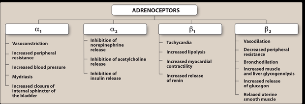
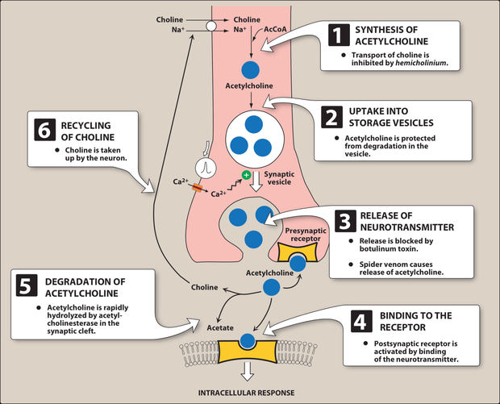
3.3 · Objective 4 — Predicting effects: the two pictures
| Muscarinic (DUMBBELS) | Nicotinic (MTWHF) | Anticholinergic |
|---|---|---|
| Defecation, urination, miosis, bradycardia, bronchorrhea, bronchospasm, emesis, lacrimation, salivation | Mydriasis, tachycardia, weakness, hypertension, fasciculations | Mad as a hatter, blind as a bat, red as a beet, dry as a bone, hot as Hades — plus constipation, urinary retention, tachycardia |
Also tested
- Atropine antisecretory use. Atropine blocks respiratory tract secretions before surgery, and glycopyrrolate is used similarly before surgery.
- Antimuscarinic excess. Too much causes the central picture of confusion, hallucinations and delirium, on top of dry mouth, blurred vision and retention.
- Beta-1 selective beta blockers. Atenolol, metoprolol and bisoprolol are selective for beta-1 receptors, which is useful when pulmonary function is impaired.
- Antispasmodic atropine isomer. Hyoscyamine is the atropine isomer that relaxes the gastrointestinal tract and bladder, and it is used for its antispasmodic action.
- Gut and bladder in anticholinergic toxicity. They lose tone, causing constipation and retention, while the heart runs alone with tachycardia.
- Nicotinic stimulation and the cardiovascular system. Heart rate and blood pressure both rise, as tachycardia and hypertension are both nicotinic effects.
- Selective beta-1 antagonists. Metoprolol is a selective beta-1 antagonist, in the same group as acebutolol, atenolol, bisoprolol and betaxolol.
- Severe anticholinergic toxicity. Seizures mark the severe end, as the mad-as-a-hatter progression runs from sedation and anxiety through hallucinations to seizures.
- Anticholinergic toxidrome. It includes "Hot as Hades" (hyperthermia), alongside mad as a hatter, blind as a bat, red as a beet and dry as a bone.
- Blind as a bat. This anticholinergic sign is mydriasis with blurry vision, one of the classic toxidrome descriptions.
When the dose changes the answer
The two pictures above assume a drug does one thing. Four of the agents in this lecture do different things at different doses, and they are usually met as four unrelated oddities. They are one idea: a drug hits its highest-affinity receptor first, and as the concentration climbs it recruits a second action that may oppose the first.
| Agent | Lower dose | Higher dose |
|---|---|---|
| Dopamine | Beta-1 — inotrope and chronotrope | Alpha-1 vasoconstriction, only at VERY high doses |
| Epinephrine | Beta effects dominate | Alpha effects take over |
| Atropine | Bradycardia | Tachycardia — the reversal that catches people out |
| Nicotine | Stimulates all ganglia — pressure rises, gut and bladder active | Paralyses them — pressure falls, gut and bladder activity ceases |
| Selective beta-1 blockers | Cardioselective, so the airway is spared | Cardioselectivity is LOST — beta-2 gets blocked too |
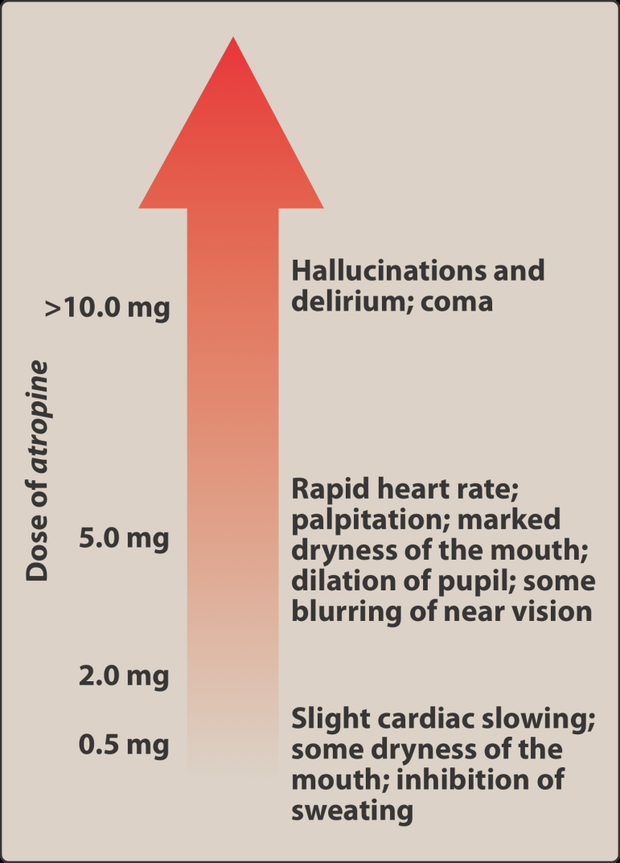
3.4 · Objectives 7–8 — Cholinergic agonists
Direct-acting bind the receptor: choline esters (acetylcholine, carbachol, bethanechol) and the alkaloid pilocarpine. Indirect-acting raise acetylcholine by inhibiting acetylcholinesterase — the anticholinesterases.
| Agent | Use |
|---|---|
| Bethanechol | Resists acetylcholinesterase, muscarinic only. Stimulates detrusor, relaxes trigone and sphincter → urinary retention |
| Carbachol | Muscarinic and nicotinic; glaucoma; releases epinephrine from the adrenal medulla |
| Pilocarpine | Miosis and ciliary contraction → glaucoma; also xerostomia |
| Edrophonium | Short acting — diagnosing myasthenia gravis, reversing nondepolarizing blockade |
| Physostigmine | Enters the brain — antidote for anticholinergic overdose |
| Neostigmine, pyridostigmine | Do not enter the brain; bladder and gut, blockade reversal, myasthenia gravis (pyridostigmine for chronic management) |
| Donepezil, rivastigmine, galantamine | Alzheimer disease — a deficiency of central cholinergic neurons |
Also tested
- Carbachol. It is used to lower intraocular pressure in glaucoma, causing miosis and spasm of accommodation.
- Neostigmine. It is used to stimulate the bladder and gut and to reverse competitive blockade, and it can stimulate contractility before paralyzing.
- Irreversible cholinesterase inhibitors. Organophosphates inhibit cholinesterase irreversibly, so the enzyme has to be reactivated with pralidoxime rather than simply out-competed.
- Organophosphate poisoning. It produces either nicotinic or muscarinic signs, and either picture can dominate, which is why the presentation varies so much.
- Bethanechol adverse effects. They are sweating, salivation, flushing and low blood pressure, alongside nausea, abdominal pain and bronchospasm.
- Pilocarpine duration. It acts for four to eight hours, with onset within minutes.
- Bethanechol receptor activity. Bethanechol has strong muscarinic activity with no nicotinic action, and it resists acetylcholinesterase.
- Physostigmine versus neostigmine and pyridostigmine. All three inhibit acetylcholinesterase, but only physostigmine crosses the blood-brain barrier, so it is used when anticholinergic toxicity is central; the others act peripherally.
- Pralidoxime limitations. In organophosphate poisoning it does not enter the CNS and cannot overcome reversible inhibitors.
- Indirect-acting cholinergic agents. They increase the activity of acetylcholine by inhibiting acetylcholinesterase, raising the transmitter rather than binding the receptor themselves.
- Muscarinic picture. Salivation, flushing, falling blood pressure, abdominal pain, diarrhea and bronchospasm together are the effects of cholinergic excess, produced by cholinesterase inhibitors and direct agonists.
- Pralidoxime limits. It is ineffective against poisoning by reversible inhibitors like physostigmine, since it cannot overcome that kind of inhibition.
- Cholinesterase inhibitors in Alzheimer disease. They are used because the disease involves loss of cholinergic neurons, so these drugs slow progression.
- Neostigmine. Neostigmine is poorly absorbed orally and does not enter the central nervous system, which is what keeps its effects peripheral.
- Slowing a rapid heart rate. An acetylcholinesterase inhibitor raises acetylcholine, increasing muscarinic activity at the heart, so bradycardia follows; a beta blocker or a muscarinic agonist would also work.
- Donepezil. A centrally acting cholinesterase inhibitor, it slows the progression of Alzheimer's disease and mostly causes gastrointestinal distress, its limiting side effect.
- Cholinergic agonists in reactive airway disease. Cholinergic agonists must be used with caution because they cause bronchospasm; the airway constricts as secretions rise.
- Organophosphates. They are most commonly encountered as agricultural insecticides; they are irreversible cholinesterase inhibitors, and poisoning shows nicotinic or muscarinic signs.
- Pilocarpine in xerostomia. Pilocarpine is used because it potently stimulates sweat, tears and saliva, which relieves the dry mouth.
- Bethanechol. It is used to treat postpartum or postoperative atonic bladder by stimulating the detrusor and relaxing the sphincter.
3.5 · Objectives 7 & 9 — Cholinergic antagonists
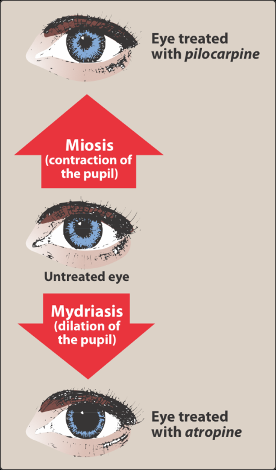
Three classes: antimuscarinics, ganglionic blockers and neuromuscular blocking agents. Antimuscarinics do not block nicotinic receptors and have little action at ganglia or the neuromuscular junction.
Atropine — persistent mydriasis and cycloplegia; antispasmodic; bradycardia at low dose, tachycardia at higher dose, given in a code for bradycardia; greatest inhibitory effect on bronchial tissue, sweat and saliva; antidote for cholinesterase inhibitor insecticides and some mushrooms. Scopolamine has greater central action — motion sickness, short-term memory blocking — and the patch carries a real instruction: wash hands afterwards or blur your vision. Synthetics: ipratropium and tiotropium (inhaled, COPD), glycopyrrolate (secretions, drooling), the bladder agents (lower pressure, raise capacity), and glycopyrronium for axillary hyperhidrosis.
Also tested
- Older bladder agents. They cause dry mouth, constipation and blurred vision, the predictable antimuscarinic effects.
- Succinylcholine. It suits rapid sequence intubation because of its rapid onset and short duration of action, the short duration owing to rapid breakdown by plasma enzyme.
- Neuromuscular blocking drugs. They are structural analogs of acetylcholine, and both types are used during surgery to produce complete muscle relaxation.
- Nicotine at autonomic ganglia. It depolarizes the ganglia, first stimulating and then paralyzing them; the stimulation raises blood pressure, heart rate, peristalsis and secretions before the fall.
- Atropine adverse effects. They are dry mouth, blurred vision, urinary retention and constipation, with bradycardia at lower doses and tachycardia at higher ones.
- Succinylcholine phases. Action has two phases: phase one is depolarization, then phase two is resistance, in which the receptor becomes incapable of transmitting further impulses.
- Ganglionic blockade. Vasodilation, atony of the bladder and gut, and tachycardia predominate, since each organ loses whichever division normally dominates it.
- Pretreatment before succinylcholine. A small dose of a nondepolarizing blocker is given first to prevent the fasciculations that cause muscle soreness, a comfort measure addressing a predictable adverse effect.
- Oxybutynin. As a bladder antimuscarinic, it lowers intravesical pressure and increases bladder capacity, reducing the frequency of bladder contractions.
- Nicotine at higher doses. Stimulation is followed by paralysis of all ganglia, so the early effects reverse: blood pressure falls and gut and bladder activity ceases.
- Newer bladder antimuscarinics. They cause fewer central effects because they are designed not to cross the blood-brain barrier, unlike oxybutynin and tolterodine.
- Scopolamine versus atropine. Scopolamine has greater central action at therapeutic doses, producing sedation and blocking short-term memory.
- First competitive neuromuscular blocker. Curare was the first known one; it was purified as tubocurarine for clinical use in the 1940s.
- Succinylcholine and potassium. Succinylcholine causes hyperkalemia by increasing potassium release from intracellular stores.
- Succinylcholine in rapid sequence intubation. Its rapid onset with short duration of action suits it to this use, which is why it is used in the emergency department.
- Prolonged paralysis after succinylcholine. Plasma cholinesterase deficiency, a genetic variant with low or absent enzyme, can cause paralysis far longer than expected.
- Ganglionic blockers. They block nicotinic receptors at sympathetic and parasympathetic ganglia; blocking everything at once is precisely why they are rarely used clinically.
- Ipratropium and tiotropium. These synthetic antimuscarinic agents are used for inhaled maintenance of bronchospasm in COPD.
- Scopolamine. Because it acts more on the central nervous system than atropine does at usual doses, it is used for preventing motion sickness; it also blocks short-term memory and sedates at lower doses.
- Antimuscarinics and sympathetic fibers. Antimuscarinics also block the cholinergic fibers to salivary and sweat glands, leaving other sympathetic stimulation unopposed.
- Competitive neuromuscular blockers. They made anesthesia safer by allowing the use of less anesthetic agent, because relaxation is achieved without deepening the anesthetic.
- Succinylcholine. It causes sustained depolarization because acetylcholinesterase does not destroy it, so it stays in the cleft stimulating the receptor.
- Glycopyrrolate. This antimuscarinic is used for excessive drooling in cerebral palsy and for hyperhidrosis.
- Ganglionic blockers. Nicotine is the one that is not a competitive antagonist, since all the others are nondepolarizing competitive agents.
- Glycopyrrolate. This antimuscarinic treats excessive sweating and drooling, and it also reduces preoperative secretions.
- Succinylcholine phases. Flaccid paralysis appears in phase two; phase one is the depolarization that produces fasciculations, then the receptor desensitizes.
3.6 · Objectives 7 & 10 — Adrenergic agonists
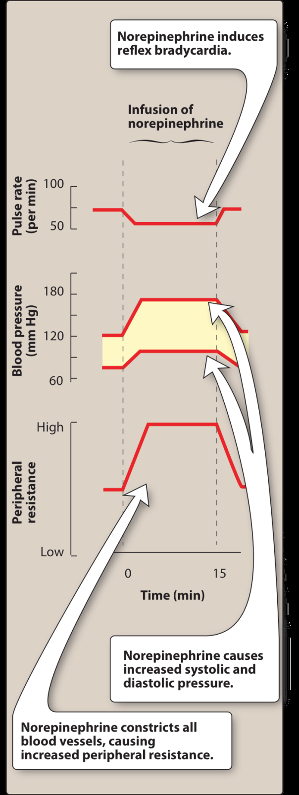
| Agent | Receptors | Use / note |
|---|---|---|
| Epinephrine | Alpha and beta — beta at low dose, alpha at high | Anaphylaxis, cardiac arrest, acute bronchospasm; raises systolic, lowers diastolic; in local anesthetic to prolong the block |
| Norepinephrine | Mostly alpha | Shock. Reflex bradycardia via baroreceptor; extravasation treated with phentolamine |
| Isoproterenol | Beta-one and beta-two | Stimulate the heart in an emergency |
| Dopamine | Beta-one; alpha-one at very high dose; dopaminergic | Cardiogenic and septic shock; dilates renal and splanchnic arteries |
| Dobutamine | Beta-one | Acute heart failure; barely raises myocardial oxygen demand; caution in atrial fibrillation |
| Phenylephrine | Alpha-one | Decongestant, septic shock; reflex bradycardia |
| Oxymetazoline | Alpha-one and two | Decongestant — rebound congestion beyond three days |
| Clonidine | Alpha-two | Hypertension, withdrawal syndromes; rebound hypertension if stopped abruptly |
| Albuterol | Beta-two | Asthma and COPD; tremor and anxiety |
Also tested
- Dobutamine in atrial fibrillation. Caution is advised because dobutamine increases atrioventricular conduction, which can accelerate the ventricular response.
- Cocaine. Besides blocking norepinephrine reuptake, it blocks neuronal sodium channels and also blocks sodium-potassium activated ATPase.
- Dopamine vasoconstriction. Dopamine causes vasoconstriction at very high doses, through alpha-one, whereas its cardiac effect is beta-one and its renal effect dopaminergic.
- Epinephrine in local anesthetic. It is included because it causes vasoconstriction at the injection site; applied topically it also helps control capillary oozing.
- Phenylephrine uses. Phenylephrine is used as a nasal decongestant, for eye redness and for septic shock.
- Alpha-adrenergic blocking agents. They share reflex tachycardia, and their effects on blood pressure are more profound when the patient stands.
- Cocaine and epinephrine. Cocaine exaggerates epinephrine's cardiovascular actions by preventing reuptake, so the transmitter persists at the receptor.
- Dopamine adverse effects. These are nausea, hypertension and arrhythmias.
- Phentolamine non-cardiovascular use. It is used to treat impotence, injected to dilate penile arteries.
- Pseudoephedrine. It is kept behind the pharmacy counter because it can be converted to methamphetamine, a regulatory rather than a pharmacological reason.
- Ephedra. Ephedra-containing herbal products were banned in 2004.
- Alpha-two agonists. An alpha-two agonist such as clonidine lowers blood pressure by reducing central sympathetic outflow, producing vasodilation by damping sympathetic drive.
- Norepinephrine administration. It is given as a titrated intravenous infusion, which suits a drug used to support vascular resistance in shock.
- Ephedra. The Food and Drug Administration banned ephedra-containing herbal products in 2004; pseudoephedrine remains available for nasal and sinus congestion.
- Oxymetazoline rebound congestion. It is managed by tapering the drug down, which lets the receptors recover.
- Rhinitis medicamentosa. This is rebound congestion, seen when Afrin is used past three days and leaves the patient more congested than before.
- Cocaine as a local anesthetic. It blocks neuronal sodium channels, separate from its blockade of norepinephrine reuptake.
- Ephedra in 2004. Ephedra-containing herbal products were banned by the regulator, though ephedrine itself was once used to prevent asthma.
- Reserpine. It depletes neurotransmitters by blocking transport into storage vesicles, affecting norepinephrine, dopamine and serotonin.
- Clonidine. It lowers blood pressure by acting centrally to reduce sympathetic outflow, as an alpha-2 agonist inhibiting vasomotor centers.
- Epinephrine in local anesthetics. It is added because it causes vasoconstriction and prolongs the block, at about 1 part in 100,000.
- Intrinsic sympathomimetic activity. This is weak agonist action alongside receptor blockade, useful where a blocker causes excessive bradycardia.
- Isoproterenol. It is used to stimulate the heart in an emergency, acting as a beta-1 and beta-2 agonist.
- Norepinephrine versus epinephrine. At blood vessels, norepinephrine produces greater vasoconstriction, acting mainly through alpha-1 receptors.
- Dobutamine in atrial fibrillation. It is used cautiously because it speeds atrioventricular conduction, which risks a faster ventricular response.
- Alpha blockers and reflex tachycardia. Alpha blockers induce reflex tachycardia, and the effects are more profound on standing.
- Clonidine. Stimulating central alpha-2 receptors inhibits the sympathetic vasomotor centers, so sympathetic outflow is reduced and vasodilation results.
- Beta-1 agonist cardiac effects. A beta-1 agonist increases contractility and rate, acting as a positive inotrope and positive chronotrope.
- Phentolamine. It competitively blocks alpha-1 and alpha-2 receptors and is used for short-term management of pheochromocytoma, where alpha blockade opposes the vasoconstriction from circulating catecholamines.
- Epinephrine dose effects. Beta effects predominate at low doses, alpha effects at high doses, so vasodilation gives way to vasoconstriction as the dose rises.
- Dobutamine. As a synthetic beta-1 agonist and positive inotrope, it is used for increasing cardiac output in acute heart failure, and does not raise myocardial oxygen demand the way other sympathomimetics do.
- Phentolamine. It is used for the hypertensive crisis of abrupt clonidine withdrawal; stopping clonidine abruptly causes rebound hypertension.
- Tyramine with a monoamine oxidase inhibitor. Tyramine is normally oxidized by monoamine oxidase in the gut, so a serious vasopressor effect can follow when that enzyme is inhibited.
- Propranolol on the nodes. Propranolol depresses both the sinoatrial and atrioventricular nodes, producing bradycardia, as a negative inotrope and chronotrope.
- Norepinephrine extravasation. It is treated with phentolamine, an alpha antagonist, because extreme vasoconstriction causes the damage.
- Guanethidine. It acts by blocking release of stored norepinephrine, which is distinct from reserpine's blockade of vesicular uptake.
- Norepinephrine extravasation. When the skin blanches, the treatment is phentolamine; this alpha blocker reverses the intense local vasoconstriction before the skin sloughs.
- Reserpine. It blocks transmitter uptake into vesicles, depleting norepinephrine, dopamine and serotonin.
- Epinephrine risks. Epinephrine carries a risk of cerebral hemorrhage from a sharp rise in blood pressure, alongside anxiety, tremor, headache, arrhythmias and pulmonary edema.
- Short-term pheochromocytoma management. Phentolamine is the agent used; phenoxybenzamine is the irreversible one used for longer preparation.
- Oral decongestant. Pseudoephedrine relieves nasal and sinus congestion and is taken by mouth, unlike oxymetazoline, which is the topical one with the three-day rebound limit.
- Tyramine. It has no therapeutic use but causes a serious pressor reaction in a patient on a monoamine oxidase inhibitor; it is found in fermented foods such as cheese and wine.
- Clonidine uses. Besides hypertension, clonidine is used for withdrawal from opiates, tobacco and benzodiazepines, by minimizing withdrawal symptoms.
- Clonidine and withdrawal. Clonidine reduces sympathetic outflow, so besides hypertension it eases withdrawal from opiates, tobacco and benzodiazepines; much of withdrawal is sympathetic overactivity, and damping the outflow blunts it.
- Phenylephrine. This alpha-1 agonist constricts vessels and raises both systolic and diastolic blood pressure.
3.7 · Objectives 7 & 11 — Adrenergic antagonists
Alpha blockers. Phenoxybenzamine is irreversible and noncompetitive — recovery needs new receptors, at least a day — and produces epinephrine reversal: vasoconstriction blocked, vasodilation left, so the net effect flips. Phentolamine is competitive and shorter. Both treat pheochromocytoma. The selective alpha-one blockers split by use: prazosin, terazosin, doxazosin for hypertension, tamsulosin, alfuzosin for benign prostatic hyperplasia — with first-dose syncope as the signature.
The rest of the class by property: timolol reduces aqueous humor for glaucoma; the selective beta-one agents suit impaired lungs but lose selectivity at higher doses; acebutolol and pindolol have intrinsic sympathomimetic activity; labetalol and carvedilol add alpha-one blockade, labetalol intravenously for hypertensive emergency and carvedilol for mortality in heart failure. Reserpine blocks transmitter uptake into vesicles; guanethidine blocks release from them.
Also tested
- Propranolol vascular effect. It produces peripheral vasoconstriction through beta-two blockade, since blocking beta-two removes vasodilation.
- Alpha-one blocker metabolic effects. They improve lipid profiles and glucose metabolism, in contrast to propranolol, which worsens both.
- Phenoxybenzamine and norepinephrine. Norepinephrine's actions are diminished but not reversed because it lacks significant beta activity on vessels, so there is no vasodilating component left to unmask.
- Beta blocker names. A beta blocker whose name begins with a letter from N to Z is generally non-selective, while A to M are generally cardioselective.
- Inhalation anesthetics and epinephrine. Inhalation anesthetics sensitize the heart to epinephrine, causing tachycardia, which matters during anesthesia.
- Carvedilol in heart failure. It has been shown to prevent cardiovascular mortality, and it reduces lipid peroxidation and wall thickening.
- Propranolol and hypoglycemia. It is risky because it blunts the normal physiological response to hypoglycemia, and it reduces glycogenolysis and glucagon secretion.
- Cocaine and epinephrine. Cocaine exaggerates the effects of epinephrine by preventing reuptake of the catecholamine, so the cardiovascular actions are amplified.
- Hyperthyroidism and epinephrine. Hyperthyroidism exaggerates epinephrine's effects because increased production of adrenergic receptors gives a hypersensitive response.
- Propranolol after myocardial infarction. It prevents a second infarct, reduces infarct size and lowers sudden death from arrhythmia.
- Propranolol in hyperthyroidism. It blunts widespread sympathetic stimulation, treating the symptoms rather than the thyroid.
- Phenoxybenzamine uses. It is used to treat phaeochromocytoma, along with autonomic hyperreflexia in paraplegic patients.
- Propranolol metabolism interactions. Cimetidine, fluoxetine, paroxetine and ritonavir inhibit its metabolism, while barbiturates, phenytoin and rifampin induce it.
- Epinephrine reversal. Alpha vasoconstriction is blocked, leaving beta vasodilation, so blood pressure falls instead of rising.
- Epinephrine with a beta blocker. Alpha effects are left unopposed: blocking the vasodilating beta side leaves only vasoconstriction.
- Cardioselective beta blockers. A cardioselective beta blocker blocks beta-one but spares beta-two, though cardioselectivity is lost at higher doses.
- Labetalol and carvedilol. Both block alpha-one, beta-one and beta-two receptors, and the alpha-one component is what produces peripheral vasodilation.
- Alpha-1 blocker side effects. Alpha-1 blockers cause dizziness, lack of energy, nasal congestion and drowsiness; alpha-1 blockade opens the nasal vessels and drops the blood pressure, hence congestion plus dizziness.